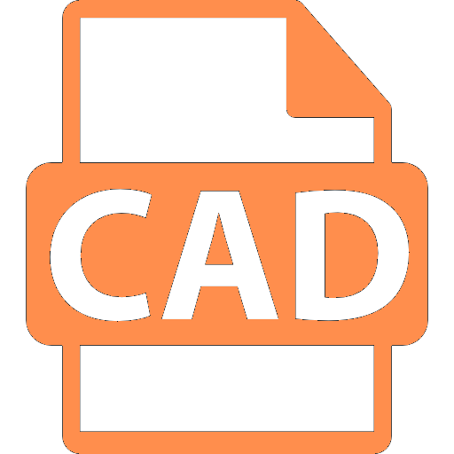
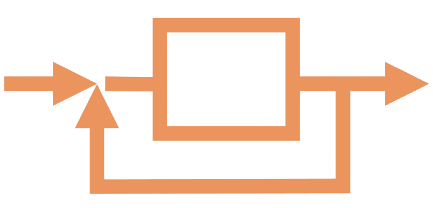
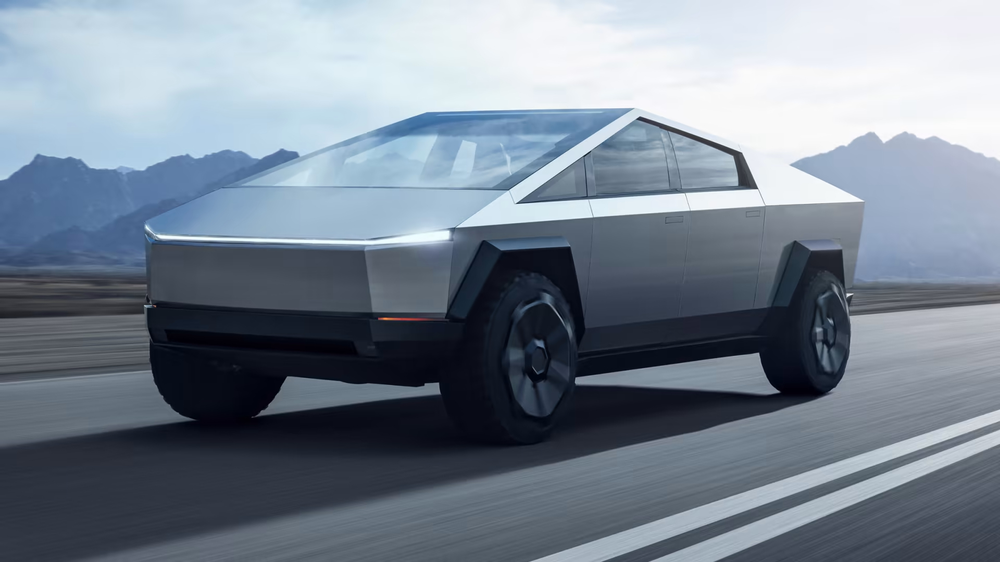
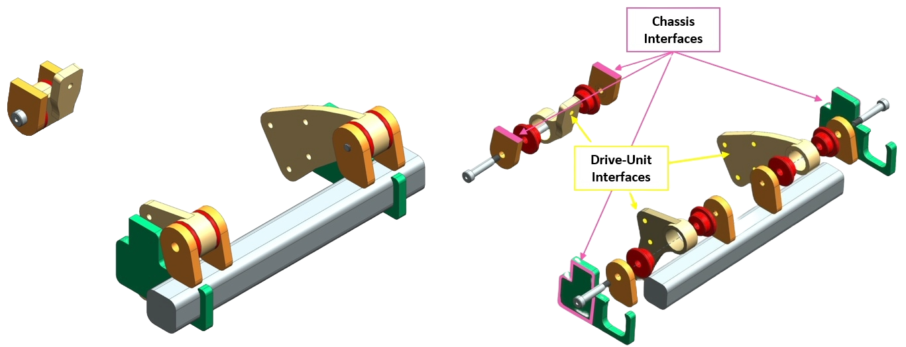
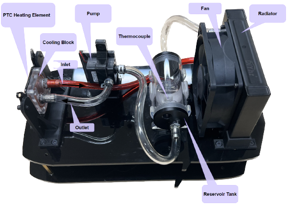
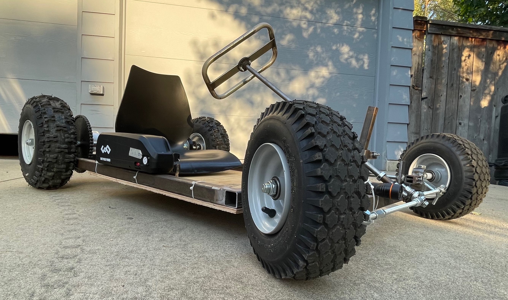

Nathaniel
Lim
> About Me
I am a grad student in Mechanical Engineering at Stanford University. I take pride in my technical abilities as well as my capacity for creativity. I try to use both to build things that bring people utility and joy.
Core Skills

CAD (CATIA V5/V6, Siemens NX, SolidWorks, Fusion 360)
Automation

Control Systems Design
.png) Mechanical/Electromechanical Systems Design
Mechanical/Electromechanical Systems Design
.png) FEA/CAE (Simcenter NASTRAN, ANSYS)
FEA/CAE (Simcenter NASTRAN, ANSYS)
Programming Languages: Python, C/C++, MATLAB, Julia
> Experience
Tesla
Through 2 internships with Tesla's hardware test org, I was able
to assume the responsibilities of a full-time test engineer and
take end-to-end ownership of the mechanical, electrical, and
controls design of many critical component, system, and
vehicle-level tests. Tests and fixtures I designed during these
internships cost anywhere from $500 to $25,000 to produce and
provided countless meaningful insights that were used to improve
vehicle reliability, safety, and quality. I've noted my favorite
projects below.

EcoCAR UC Davis
The EcoCAR EV challenge is a student competition in which teams compete to build a next generation electric vehicle. As the system design and integration lead for the UC Davis team, I completed several notable individual projects in addition to my leadership responsibilities.

> Projects
NOTE: The below list is not exhaustive, but it conveys well my primary skills and interests.
1. 4-Bar Window Cycler (Tesla)
Wrote and utilized linkage synthesis tools in C to generate a 4-bar geometry capable of cycling a manual side window with an irregular handle sweep. Final design was able to load the system in a human-representative manner while only requiring 1 actuator and relatively simple controls.
2. Vertical Strength Testing Gantry (Tesla)
Designed and implemented a vertical gantry system capable of applying high loads to every +z surface on any passenger vehicle or pickup truck. Structural design was driven by seismic loads and deflection criteria at the end effector.
3. Cable Durability Test Rig (Tesla)
Designed and implemented a test rig and control system capable of durability testing 12 separate cables independently while continuously collecting performance data and detecting failures for each.
NOTE: I can only disclose non-proprietary information regarding my work at Tesla.
4. Custom Cadillac LYRIQ Subframe and Powertrain Mounting (EcoCAR)
Designed and planned the integration of a custom chassis structure and mounting/packaging strategy for a highly energy efficient electric powertrain in a Cadillac LYRIQ. Project involved managing and digesting top-level vehicle CAD, reverse engineering of physical vehicle through 3D scanning, and detailed structural analyses to ensure the added structures met competition designated strength and stiffness requirements.
5. Functional Small-Scale Prototype of Automotive Thermal Management System (EcoCAR)
Designed and built a functioning scale model of a thermal management system for a Cadillac LYRIQ. A heating element was used to simulate drive unit heat generation which was rejected by a pump-radiator-fan system controlled via Arduino.
5. Hybrid Electric Go-Kart (Personal Project)
Designed and built a series hybrid-electric go-Kart with a 1.8kW electric motor, a lawnmower engine, and an alternator. Final design included a custom torsion bar suspension system. Chassis, suspension, and steering assembly were fabricated completely from raw materials.